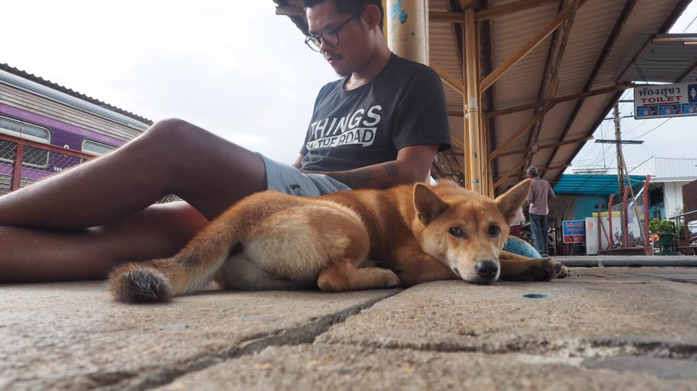

何止改变？ 简直是埋葬我好么？
我从04年脱离工厂，到厦门做一名积极向上的设计师，从1800块起薪开始，立志每年要比上一年涨薪1000块一个月。那时候根本就不会想到旅行好么？什么是旅行？败家玩意才干的事儿啊。从04年一直到10年，这6年时间时里，我除了出差以外，几乎没有离开过厦门。
2010年一连串的打击下，我决定离职去趟香港澳门什么的，为毛去香港？因为香港设计亚洲最牛逼啊，想到的还是去见见世面，学习回来后能涨点薪水。结果好死不死看到了仓央嘉措的一首诗，没错，是一首诗---“住进布达拉宫，我是雪域最大的王，流浪在拉萨街头，我是世间最美的情郎”。当时看完起鸡皮ge da，心想“吹牛逼，不要脸。”然后就决定去拉萨看看这去世了300多年的活佛。不靠谱的百度一搜索拉萨，出来一串什么“骑行拉萨，自驾拉萨”。结果就被忽悠买了辆自行车骑过去了。你说什么为不自驾？因为穷啊，大舅子。
去拉萨前，嫩肉一枚（右边是我啊）海魂衫，梅花牌运动服才绝配啊。
出发一个月后，我妈都不认识我了。从此就保持这种形象一路狂奔到现在啊。
西藏回来后，心里种下了一颗浪荡的种子，发现这世界，哎哟，怎么那么好，怎么就那么漂亮，这还没出国呢，哎哟，不行。。。我只是一只设计狗，不配拥有更多的旅行。
某天晚上一拍脑袋！！！我得开个饭馆啊！！！开什么饭馆？去西藏路上不是吃过一种叫“鲁朗石锅鸡”的嘛，弄到厦门来开啊，绝逼爆火！！没钱怎么办？借啊！我写了“创业计划书”，那时候不像现在那么容易忽悠钱，我挨个讨过去，终于讨到了75万。找不到师傅怎么办？自己去学厨啊！原打算去西藏学，后来发现北京有家店，我立马赶到北京交了学习费用。从设计师变成炒火锅料的厨子，第一天就切到手指，我没敢坑声，默默转身上药回来，我叫小我6岁的哥们“师父”，和他一起睡在店里2个月，习得一身手艺回厦张罗开店。
哪，就是这家。你说，我要不作死去西藏旅行，就不会开这店了。是吧。
为了省钱，从头到尾都是自己设计的，连门口的木地板都是自己算好用料，从淘宝上买好防腐木，和朋友一起钉的。
和想象中的一样，1年2个月后倒闭了，背了一屁股债。这债多到我做设计师非常难还。上了半年班，准备去拉萨和朋友开酒吧，被劝阻留在厦门。借了1万5重新开始，卖寿司，从摆摊到借朋友酒吧场地再到有自己的店面。
8个月后又他妈活过来了，还掉所有的债务（都是旅行带来的祸啊）。骑摩托车重走西藏。2014年9月26日再次到达西藏。
慢慢的，我的工作就有意无意往旅行上靠，我希望我的生活和旅行能够在一起。2015年，一帮人自驾入藏。
2016年1月，开始长时间的旅行，从越南开始一路骑行到柬埔寨，老挝，泰国，马来西亚，斯里兰卡，台湾等地。
你们知道的，我在越南还收养了一只小土狗，一路上带着。
今年春节前一天，我们在越南会安被飞车抢劫，靠着这一片烟盒36小时便纸破了案，还上了当地报纸。（警民合作鱼水情，本市破获飞车抢劫党，帮中国游客寻回失物），是不是很像当年武汉日本人丢自行车？
中文翻译成英文再翻译成越南文，整个笔录和破案过程就是这么沟通的。
夜里凌晨，车轱辘骑坏了，一边将板砖放在随手处，一边感谢越南朋友的帮忙。没办法，在陌生的地方，我们只能用最大的恶意来保护自己。（因为他们对我的摩托车表示出极大的兴趣）
在柬埔寨暹粒，我们摆摊挣旅行费用（虽然毛都没卖出去）
在老挝四千美岛，我们去湄公河外看海豚。
拎着房东的煤炉，在河边和抽大麻的德国姑娘来一场说走就走的BBQ。双喜误喝伏特加，三步两步吐成狗。
恐高的我尝试了第一次高台跳水。一头扎进湄公河，蛋真疼啊。。旁边的美国黑小伙说：“牛逼啊，大舅子！”
我们在曼谷过了泼水节。
在曼谷逛设计展览
带双喜从长途火车去苏梅岛
在廉价的火车上过夜
从老挝坐硬座火车，带着双喜终于到了曼谷
在斯里兰卡看印度洋的日出
在印度洋潜水观鲸鱼，20米长的大鲸鱼啊！一群一群。
穷屌的旅行一言不合就飞奔。
在台北和当地年青人聊两岸，聊旅行，聊对生活的态度和期望。
......
你说，旅行真的会使人改变吗？对于我来说，是的。不仅是改变，因此，或许我此生便被埋葬在某个陌生的地方。
接下来，我计划从拉萨出发，自驾17省20城，有路过你们的城市时，记得出来和我一起去露营哦。生活本应可以更多可能，希望我所看到的世界，便是你想象中的样子。
-----------这里是广告---------- 推销下我带狗子旅行的小的公众号<旅物LIVE>，平时游记都会发在那儿，哈哈哈。喜欢就点赞，不喜勿喷，我素质很低，你喷不过我。
统一回复，1，举摩托车是ps的，我干设计出身的嘛。2，我不是宋喆，3，旅行费用靠卖货，打赏等，4，关于几十万的债怎么还的，请参考我另一个关于创业的答案>创业失败的人后来都怎么样了？ - 肥虫的回答谢谢。
对于想看更多双喜的事儿> 养狗是一种怎样的体验？ - 肥虫的回答
回答旅行为生会碰到什么困难>把爱好当事业是很可怕的事情吗？ - 肥虫的回答